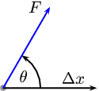
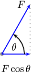
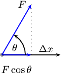
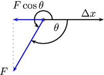
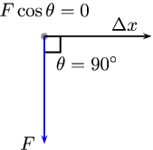
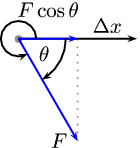

|
Left: A powerlifter deadlifts a weight. Right: A powerlifter benchpresses a weight.
In the specific case of a force acting on an object, worked can be defined in terms of the force and the displacement of the object. This means that there is an energy transfer from the source of the force to the object. The total energy transferred is the work done.
When a force exerted on an object causes it to move, work is done on the object.
This means that in order for work to be done, an object must have its position changed by an amount an applied force F, such that there is some non-zero component of the force in the direction of the displacement. Work is calculated as:
Where:
 <code>
(-1,-1)(2.5,2.5)
\psdot[linecolor=gray](0,0)
\psline{->}(0,0)(2;0)
\uput[l](2;60){$F$}
\psline[linecolor=blue]{->}(0,0)(2;60)
\rput[b](1.5,.1){$\Delta x$}
\rput(0.5;30){$\theta$}
\psarc{->}(0,0){0.8}{0}{60}
</code> |  <code>
(-1,-1)(2.5,2.5)
\psdot[linecolor=gray](0,0)
\psline[linecolor=blue]{->}(0,0)(2;60)
\psline[linestyle=dotted,linecolor=gray](2;60)(1,0)
%\psline{->}(0,0)(2;0)
\uput[l](2;60){$F$}
\rput(0.5;30){$\theta$}
\psline[linecolor=blue]{->}(0,-0.)(1.0,-0.)
\uput[d](0.5,-0.2){$F\cos\theta$}
\psarc{->}(0,0){0.8}{0}{60}
</code> |  <code>
(-1,-1)(2.5,2.5)
\psdot[linecolor=gray](0,0)
\psline[linecolor=blue]{->}(0,0)(2;60)
\psline[linestyle=dotted,linecolor=gray](2;60)(1,0)
\psline{->}(0,0)(2;0)
\uput[l](2;60){$F$}
\rput(0.5;30){$\theta$}
\psline[linecolor=blue]{->}(0,-0.)(1.0,-0.)
\uput[d](0.5,-0.2){$F\cos\theta$}
\rput[b](1.5,.1){$\Delta x$}
\psarc{->}(0,0){0.8}{0}{60}
</code> |
The force causes the object to be displaced by at angle θ.
Important: the sign of is important. If the component of the force along the direction of the displacement is opposite in direction to the displacement then the sign of the displacement vector and force vector will be different. This is regardless of which direction was chosen as a positive direction. Work isn't a vector quantity but if the force and dispalcement vectors are in opposite directions the work done has a negative value.
Let us look at some examples to understand this properly. In the images below the grey dot represents an object. A force, , acts on the object. The object moves through a displacement, . What is the sign of the work done, , in each case?
At the magnitude of the component of the force in the direction of the displacement is zero so no work is done.
<code>
(-1.5,-1)(2.5,2.5)
\psframe(0,0)(.3,.3)
\psdot[linecolor=gray](0,0)
\psline[linecolor=blue]{->}(0,0)(2;90)
\psline{->}(0,0)(2;0)
\uput[l](2;90){$F$}
\rput(0.7,.5){$\theta=90^\circ$}
\uput[d](-0.,-0.2){$F\cos\theta=0$}
\rput[b](1.5,.1){$\Delta x$}
</code>At the magnitude of the component of the force along the line of the displacement is opposite in direction to the displacement so negative work is done.
<code>
(-1.5,-1)(2.5,2.5)
\psdot[linecolor=gray](0,0)
\psline[linecolor=blue]{->}(0,0)(2;120)
\psline[linestyle=dotted,linecolor=gray](2;120)(-1,0)
\psline{->}(0,0)(2;0)
\uput[l](2;120){$F$}
\rput(0.5;30){$\theta$}
\psline[linecolor=blue]{->}(0,-0.)(-1.0,-0.)
\uput[d](-0.5,-0.2){$F\cos\theta$}
\rput[b](1.5,.1){$\Delta x$}
\psarc{->}(0,0){0.8}{0}{120}
</code>It is very important to note that for work to be done there must be a component of the applied force in the direction of motion. Forces perpendicular to the direction of motion do no work.
 <code>
(-1.5,-2.5)(2.5,1)
\psdot[linecolor=gray](0,0)
\psline[linecolor=blue]{->}(0,0)(2;-120)
\psline[linestyle=dotted,linecolor=gray](2;-120)(-1,0)
\psline{->}(0,0)(2;0)
\uput[l](2;-120){$F$}
\rput(0.5;-30){$\theta$}
\psline[linecolor=blue]{->}(0,-0.)(-1.0,-0.)
\uput*[u](-0.5,0.2){$F\cos\theta$}
\rput[b](1.5,.1){$\Delta x$}
\psarc{->}(0,0){0.3}{0}{-120}
\psarc{</code> |  <code>
(-1.5,-2.5)(2.5,1)
\psframe(0,0)(.3,-.3)
\psdot[linecolor=gray](0,0)
\psline[linecolor=blue]{->}(0,0)(2;-90)
\psline{->}(0,0)(2;0)
\uput[l](2;-90){$F$}
\rput(0.8,-.5){$\theta=90^\circ$}
\uput[u](-0.,0.2){$F\cos\theta=0$}
\rput[b](1.5,.1){$\Delta x$}
</code> |  <code>
(-1,-2.5)(2.5,1)
\psdot[linecolor=gray](0,0)
\psline[linecolor=blue]{->}(0,0)(2;-60)
\psline[linestyle=dotted,linecolor=gray](2;-60)(1,0)
\psline{->}(0,0)(2;0)
\uput[l](2;-60){$F$}
\rput(0.5;-30){$\theta$}
\psline[linecolor=blue]{->}(0,-0.)(1.0,-0.)
\uput[u](0.5,0.2){$F\cos\theta$}
\rput[b](1.5,.1){$\Delta x$}
\psarc{}(0,0){0.3}{0}{300}
</code> |
The force F causes the object to be displaced by at angle θ.
It is only the direction of the force on the object that matters and not the direction from the source of the force to the object. In Figure fig-wpe12-powerlifters both powerlifters are exerting an upwards force on the weights. On the left the weight is being pulled upwards and on the right it is being pushed upwards.
|
Left: A powerlifter deadlifts a weight. Right: A powerlifter benchpresses a weight.
Weight lifting is a good context to think about work because it helps to identify misconceptions introduced by everyday use of the word work. In the two cases in Figure fig-wpe12-powerlifters everyone would describe moving the weights upwards as very hard work. From a physics perspective, if the powerlifters lift the weight they are exerting a force in the direction of the displacement so positive work is done.
Consider the strongman walking in Figure fig-wep-carry. He carries two very heavy sleds as far as he can in a competition. What work is the man doing on the sleds and why?

A strongman carries heavy sleds as far as possible in a competition.
Most people would say he is working very hard because they are heavy to carry but from a physics perspective he is doing no work. The reason that he does no work is because the force he exerts is directly upwards to balance the force of gravity and the displacement is in the horizontal direction. Therefore there is no component of the force in the direction of displacement () and no work done.
His muscles do need to use their energy reserves to maintain the force to balance gravity. That does not result in energy tranfser to the sleds. Our definition for work is restricted to the case where energy transfer happens because of a net force in the direction of displacement of an object.
Decide whether on not work is done in the following situations. Remember that for work to be done a force must be applied in the direction of motion and there must be a displacement. Give reasons for your answer.
Max pushes against a wall and becomes tired.
A book falls off a table and free falls to the ground.
A rocket accelerates through space.
A waiter holds a tray full of meals above his head with one arm and carries it straight across the room at constant speed. (Careful! This is a tricky question.)
Max pushes against a wall and becomes tired. Answer: No work is done because there is no displacement.
A book falls off a table and free falls to the ground. Answer: Yes work is done because there is a displacement in the direction of the force of gravity.
A rocket accelerates through space. Answer: Yes work is done because there is a net force acting for there to be a net acceleration. If there is an acceleration then there is a displacement.
A waiter holds a tray full of meals above his head with one arm and carries it straight across the room at constant speed. (Careful! This is a tricky question.) Answer: No work is done because there is no net force in the direction of the displacement.
<code>
(0,-1)(11,3)
\def\cart{\psframe[fillstyle=solid,fillcolor=gray](-0.1,0.375)(1.1,1)\psdot(0.2,0.2)\pscircle[linewidth=2pt](0.2,0.2){0.2}\psdot(0.8,0.2)\pscircle[linewidth=2pt](0.8,0.2){0.2}}
\psline[linewidth=2pt,linecolor=brown](0,0)(3,0)
\rput(1,0){\cart}
\psline{->}(2.1,0.75)(3,0.75)
\uput[ur](2,0.75){$F$}
\rput(1,0){\psline{->}(0,-0.2)(1,-0.2)
\uput[dl](1,-0.2){$\Delta x$}}
\rput{30}(4,0){\psline[linewidth=2pt,linecolor=brown](0,0)(3,0)
\rput(1,0){\cart}
\psline{->}(2.1,0.75)(3,0.75)
\uput[ur](2,0.75){$F$}
\rput(1,0){\psline{->}(0,-0.2)(1,-0.2)
\uput[dl](1,-0.2){$\Delta x$}}
}
\rput{-30}(7.4,1.5){\psline[linewidth=2pt,linecolor=brown](0,0)(3,0)
\rput(1,0){\cart}
\psline{->}(2.1,0.75)(3,0.75)
\uput[ur](2,0.75){$F$}
\rput(1,0){\psline{->}(0,-0.2)(1,-0.2)
\uput[dl](1,-0.2){$\Delta x$}}
}
</code>For each of the above pictures, the force vector is acting in the same direction as the displacement vector. As a result, the angle because there is no difference in angle between the direction of applied force and the direction of displacement.
As with all physical quantities, work must have units. Following from the definition, work is measured in . The name given to this combination of S.I. units is the joule (symbol J).
The work done by a force can then be positive or negative. This sign tells us about the direction of the energy transfer. Work is a scalar so the sign should not be misinterpreted to mean that work is a vector.
If acts in the same direction as the motion then positive work is being done. In this case the object on which the force is applied gains energy.
If the direction of motion and are opposite, then negative work is being done. This means that energy is transferred in the opposite direction. For example, if you try to push a car uphill by applying a force up the slope and instead the car rolls down the hill you are doing negative work on the car. Alternatively, the car is doing positive work on you!
The everyday use of the word "work" differs from the physics use. In physics, only the component of the applied force that is parallel to the motion does work on an object. So, for example, a person holding up a heavy book does no work on the book.
The car is speeding up and a force of ~ is applied forward on the car while it is travelling ~ forward. Calculate the work done on the car.

The force applied is F=~.
The distance moved is = ~.
The applied force and distance moved are in the same direction. Therefore, and the angle between the force and displacement is .
These quantities are all in SI units, so no unit conversions are required.
We are asked to find the work done on the car. We know from the definition that work done is .
Remember that the answer must be positive as the applied force and the motion are in the same direction (forwards). In this case, the car gains kinetic energy.
The car is slowing down and a force of ~ is applied opposite to the direction of motion while it travels ~ forward. Calculate the work done on the car.
The force applied is F=~.
The distance moved is = ~.
The applied force and distance moved are in the opposite direction. Therefore, .
These quantities are all in the correct units, so no unit conversions are required.
We are asked to find the work done on the car. We know from the definition that work done is
Note that the answer must be negative as the applied force and the motion are in opposite directions. This means that the energy is being lost by the car. This may be energy lost as heat to the environment.
What happens when the applied force and the motion are not parallel? By using the formula , we are actually calculating the component of the applied force in the direction of motion. Note that the component of the force perpendicular to the direction of motion does no work.
Calculate the work done on a box, if it is pulled ~ along the ground by applying a force of at an angle of to the horizontal.
<code>[>=stealth]
\newcommand*{\ArcAngle}{60}%
\newcommand*{\ArcRadius}{2.0}%
\newcommand*{\LineExtend}{1.25}%
\newcommand*{\LableExtend}{1.10}%
\node[anchor=south west,inner sep=0] (image) at (0,0) {\includegraphics[width=.2\textwidth]{photos/noun_project_17863.png}};
\begin{scope}[x={(image.south east)},y={(image.north west)}]
\draw[->, ultra thick] (.93,.5) -- (1.53,1.539);
% \draw[gray, dotted, thick] (.93,.5) -- (1.3,.5);
\draw (1.35,1.1) node {$\vec{F}$};
% \draw (1.1,.5) node {$60^\circ$};
\end{scope}</code>The force applied is F=~
The distance moved is = ~ along the ground
The angle between the applied force and the motion is
These quantities are in the correct units so we do not need to perform any unit conversions.
We are asked to find the work done on the box.
Now we can calculate the work done on the box:
Note that the answer is positive as the component of the force parallel to the direction of motion is in the same direction as the motion.
The work done on the box is ~.
A ~ force is applied to push a block across a friction free surface for a displacement of ~ to the right. The block has a weight of ~. Determine the work done by the following forces: normal force, weight , applied force.
<code>
(0,0)(2,2)
\psframe(0.5,0.5)(1.5,1.5)
\psline[linewidth=2pt](0,0.5)(2,0.5)
\psline{->}(1,1.5)(1,2)
\uput[l](1,2){$N$}
\psline{->}(1,0.5)(1,0)
\uput[l](1,0){$F_g$}
\psline{->}(1.5,1)(2,1)
\uput[r](2,1){$F_{app}$}
</code>dfsdfasfasf
A ~ frictional force slows a moving block to a stop after a displacement of ~ to the right. The block has a weight of ~ Determine the work done by the following forces: normal force, weight, frictional force.
<code>
(0,0)(2,2)
\psframe(0.5,0.5)(1.5,1.5)
\psline[linewidth=2pt](0,0.5)(2,0.5)
\psline{->}(1,1.5)(1,2)
\uput[l](1,2){$N$}
\psline{->}(1,0.5)(1,0)
\uput[l](1,0){$F_g$}
\psline{->}(0.5,1)(0,1)
\uput[l](0,1){$F_{friction}$}
</code>A ~ force is applied to push a block across a frictional surface at constant speed for a displacement of ~ to the right. The block has a weight of ~ and the frictional force is ~. Determine the work done by the following forces: normal force, weight, frictional force.
<code>
(0,0)(2,2)
\psframe(0.5,0.5)(1.5,1.5)
\psline[linewidth=2pt](0,0.5)(2,0.5)
\psline{->}(1,1.5)(1,2)
\uput[l](1,2){$N$}
\psline{->}(1,0.5)(1,0)
\uput[l](1,0){$F_g$}
\psline{->}(0.5,1)(0,1)
\uput[l](0,1){$F_{friction}$}
\psline{->}(1.5,1)(2,1)
\uput[r](2,1){$F_{app}$}
</code>A ~ object is sliding at constant speed across a friction free surface for a displacement of ~ to the right. Determine if there is any work done.
<code>
(0,0)(2,2)
\psframe(0.5,0.5)(1.5,1.5)
\psline[linewidth=2pt](0,0.5)(2,0.5)
\psline{->}(1,1.5)(1,2)
\uput[l](1,2){$N$}
\psline{->}(1,0.5)(1,0)
\uput[l](1,0){$F_g$}
</code>A ~ object is pulled upward at constant speed by a ~ force for a vertical displacement of ~. Determine if there is any work done.

<code>
(0,0)(2,2)
\psframe(0.5,0.5)(1.5,1.5)
\psline{->}(1,1.5)(1,2)
\uput[l](1,2){$T$}
\psline{->}(1,0.5)(1,0)
\uput[l](1,0){$F_g$}
</code>Before beginning its descent, a roller coaster is always pulled up the first hill to a high initial height. Work is done on the roller coaster to achieve this initial height. A coaster designer is considering three different incline angles of the hill at which to drag the ~ car train to the top of the ~ high hill. In each case, the force applied to the car will be applied parallel to the hill. Her critical question is: which angle would require the least work? Analyse the data, determine the work done in each case, and answer this critical question.
Angle of Incline | Applied Force | Distance | Work |
~ | ~ | ||
~ | ~ | ||
~ | ~ |
Angle of Incline | Applied Force | Distance | Work |
~ | ~ | ~ | |
~ | ~ | ~ | |
~ | ~ | ~ |
An angle of 55° requires the least amount of work to be done.
Big Bertha carries a ~ suitcase up four flights of stairs (a total height of ~) and then pushes it with a horizontal force of ~ at a constant speed of ~ for a horizontal distance of ~ on a frictionless surface. How much work does Big Bertha do on the suitcase during this entire trip?
A mother pushes down on a pram with a force of ~ at an angle of . The pram is moving on a frictionless surface. If the mother pushes the pram for a horizontal distance of ~, how much does she do on the pram?
<code>
(1,0)(5.2,4.4)
\psline[linewidth=2pt](0,0)(5,0) \psarc(2.5,2.5){1.5}{180}{360}
\psarc(1.75,2.5){0.75}{0}{180}
\psline(2.5,2.5)(4,2.5)
\psline(4,2.5)(4,3)
\psdot(4,3)
\rput(4,3){\psline{</code>How much work is done by an applied force to raise a ~ lift 5 floors vertically at a constant speed? Each floor is ~ high.
A student with a mass of ~ runs up three flights of stairs in ~, covering a vertical distance of ~. Determine the amount of work done by the student to elevate her body to this height. Assume that her speed is constant.
We have only looked at a single force acting on an object. Sometimes more than one force acts at the same time (we dealt with this in Grade 11). We call the work done after taking all the forces into account the net work done. In this case there are two equivalent approaches we can adopt to finding the net work done on the object. We can:
Remember that work done tells you about the energy transfer to or from an object. That is why we can have zero net work done even if multiple large forces are acting on an object. Forces that result in positive work increase the energy of the object, forces that result in negative work reduce the energy of an object. If as much energy is transferred to an object as is transferred away then the final result is that the object gains no energy overall.
The same car is now accelerating forward, but friction is working against the motion of the car. A force of ~ is applied forward on the car while it is travelling ~ forward. A frictional force of ~ acts to oppose the motion. Calculate the net work done on the car.

Only forces with a component in the plane of motion are shown on the diagram. No work is done by or
The force applied is F=~ forwards.
The force of friction is F=~ backwards.
The distance moved is = ~.
The applied force and distance moved are in the same plane so we can calculate the work done by the applied forward force and the work done by the force of friction backwards.
These quantities are all in the correct units, so no unit conversions are required.
We are asked to find the net work done on the car. We know from the definition that work done is
The answer shown in this worked example shows that although energy has been lost by the car to friction, the total work done on the car has resulted in a net energy gain. This can be seen by the positive answer.
There is an alternative method to solve the same problem, which is to determine the net force acting on the car and to use this to calculate the work. This means that the vector forces acting in the plane of motion must be added to get the net force . The net force is then applied over the displacement to get the net work .
The same car is now accelerating forward, but friction is working against the motion of the car. A force of ~ is applied forward on the car while it is travelling ~ forward. A frictional force of ~ acts to oppose the motion. Calculate the net work done on the car.
Only forces with a component in the plane of motion are shown on the diagram. No work is done by or as they act perpendicular to the direction of motion. The net force acting in the plane of motion will be calculated using the non-perpendicular forces.
The force applied is F=~ forwards.
The force of friction is F=~ backwards.
The distance moved is = ~.
The applied forces and the force of friction are in the same plane as distance moved. Therefore, we can add the vectors. As vectors require direction, we will say that forward is positive and therefore backward is negative. Note, the force of friction is acting at i.e. backwards and so is acting in the opposite vector direction i.e. negative.
These quantities are all in the correct units, so no unit conversions are required.
We are asked to find the net work done on the car. We know from the definition that work done is
Let forwards be positive.